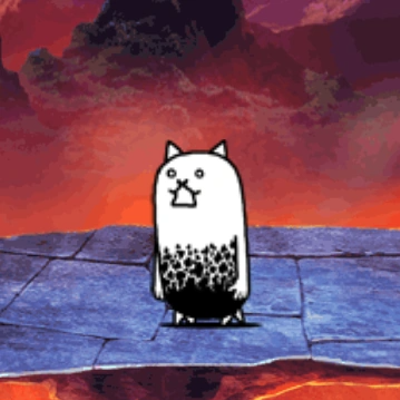
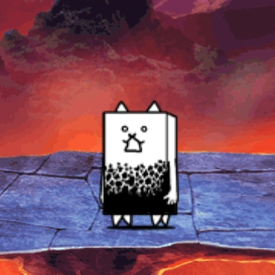
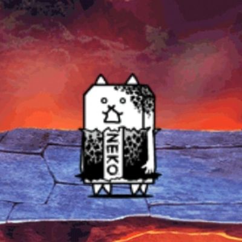

About
The Tank Cat's competition
Crazed Tank Cat is another Tank Cat but with more versatility thanks to its notably increased movement speed. Just like Tank Cat, it can be spammed to halt the progression of the enemy frontline towards the Cat Base, making him an essential choice for nearly any level that requires meatshield spam. Once you unlock it, you could use it to replace one of your other meatshields, or use him in tandem with the original to create a very thick line of defense. Like Crazed Cat, being a fast meatshield brings multiple benefits; it can quickly protect Cat Units that are far from the cat base, it's easier for it to enter the blind spot of enemies with Long Distance attacks, and it won't linger in the battlefield for long and die faster from tanking hits. Therefore, it also won't clog up the cat deploy limit as much as slower meatshields. It's definitely worth it to hypermax this unit with Catseyes, as at high enough levels it can tank more hits from strong enemies like Teacher Bun Bun and R.Ost, which can potentially make all the difference in winning the battle as it keeps other Cat Units alive for much longer.
True Form: Manic Eraser Cat gains much more health and more speed, increasing its usage by a large margin. The health increase is excellent and further improves its defensive prowess. The speed improvement is only by 4, but it helps nonetheless (Battle Cats Wiki).
  BACK HOME